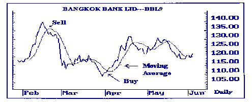
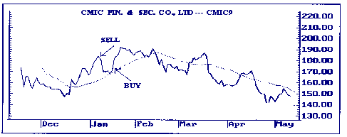
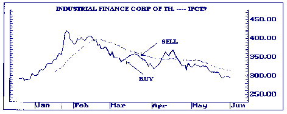
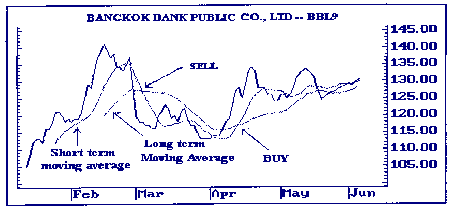
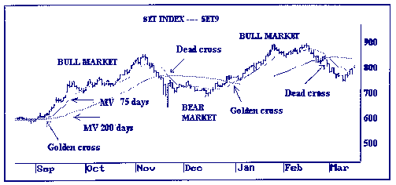
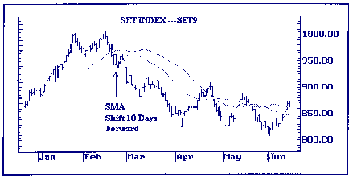
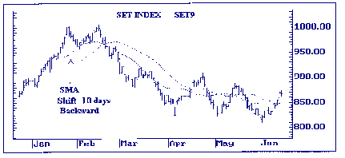

| << | 5 | >> |
การวิเคราะห์หลักทรัพย์โดยวิธีทางเทคนิค เส้นค่าเฉลี่ยเคลื่อนที่ (Moving Average)
เส้นค่าเฉลี่ยเคลื่อนที่ MOVING AVERAGE (MA)
เป็นเครื่องมือทางเทคนิคที่ใช้กันแพร่หลายวิธีหนึ่ง เนื่องจากใช้ได้ง่ายและสามารถนำไปใช้ประกอบกับเครื่องมือทางเทคนิคต่าง
ๆ ได้อีกด้วย นอกจากนั้น เส้นค่าเฉลี่ยเคลื่อนที่ (MOVING AVERAGE) ยังสามารถให้สัญญาณที่ไม่คลุมเครือซึ่งต่างจากเครื่องมือทางเทคนิคอื่น
ๆ เช่น การวิเคราะห์รูปแบบของราคา (PRICE PATTERN) ที่มีความไม่แน่นอนสูง
หลักการคำนวณค่าเฉลี่ยเคลื่อนที่แบบพื้นฐาน ทำได้โดยนำราคาของวันปัจจุบันและวันก่อนหน้านี้มารวมกัน
แล้วหารด้วยจำนวนวันที่ต้องการเฉลี่ยทั้งหมด ซึ่งจะขึ้นอยู่กับเส้นค่าเฉลี่ยนั้นว่า
จะนำมาใช้ในการวิเคราะห์แนวโน้มในระยะสั้น กลาง หรือระยะยาว และสำหรับวันถัดไปสามารถหาค่าเฉลี่ยได้
โดยตัดข้อมูลวันแรกสุดออกไป และเอาราคาของวันล่าสุดเข้ามาแทนที่ จากนั้นก็นำมาคำนวณโดยวิธีเดียวกัน
เช่น ถ้าต้องการหาค่าเฉลี่ยระยะสั้น 10 วัน ราคาสำหรับ 10 วันสุดท้ายจะถูกนำมารวมกันแล้วหารผลทั้งหมดด้วย
10 เนื่องจากข้อมูลทั้งหมด (ในที่นี้คือ 10 วัน แล้วหารผลทั้งหมดด้วย 10 เนื่องจากข้อมูลทั้งหมด
(ในที่นี้คือ 10 วันสุดท้าย) จะถูกเฉลี่ยเคลื่อนที่ (MOVE) ไปข้างหน้า จึงเรียกว่า
ค่าเฉลี่ยเคลื่อนที่
สำหรับการหาค่าเฉลี่ยในวันถัดไป ทำได้โดยนำราคาของวันใหม่ (วันที่
11) เข้ามาและตัดวันที่ย้อนหลังไป 11 วัน (คือวันแรกสุดที่ใช้คำนวณ) ก็จะได้ค่าเฉลี่ยเคลื่อนที่
10 วันสำหรับวันถัดมาซึ่งการหาค่าเฉลี่ย ส่วนใหญ่จะใช้ราคาปิดมาคำนวณ แต่บางครั้งมีการใช้ราคาสูงสุด
หรือต่ำสุด หรือราคากลาง หรือราคาเฉลี่ย มาคำนวณหาเส้นค่าเฉลี่ยเช่นกัน เนื่องจากมีนักวิเคราะห์บางคนให้ความเห็นว่าการใช้ราคาสูง
และราคาต่ำ จะสะท้อนให้เห็นถึงราคาที่แท้จริงที่ทำการซื้อขายในแต่ละวัน ค่าเฉลี่ยเคลื่อนที่จะช่วยบอกนักลงทุนที่ซื้อหุ้นในช่วงเวลานั้น
ๆ ว่ามีต้นทุน เฉลี่ยอยู่ที่ระดับราคาประมาณเท่าไร และเรายังสามารถนำเส้นค่าเฉลี่ยฯ
มาช่วยในการตัดสินใจลงทุนซื้อหุ้นแต่ละตัว โดยการหาสัญญาณซื้อ และขายหรือพยากรณ์แนวโน้มของตลาดหรือราคาหุ้น
และนี่คือเหตุผลสำคัญอันหนึ่งที่ทำให้เส้นค่าเฉลี่ยเคลื่อนที่ สามารถนำมาใช้วิเคราะห์การเคลื่อนไหวของราคาหุ้นได้เป็นอย่างดี
โดยเฉพาะในระยะสั้น และระยะกลาง
เส้นค่าเฉลี่ยเคลื่อนที่สามารถคำนวณได้ใน 5 รูปแบบ คือ
1. SIMPLE MOVING AVERAGE
2. WEIGHTED MOVING AVERAGE
3. MODIFIED MOVING AVERAGE
4. EXPONENTIAL MOVING AVERAGE
5. HAMMING MOVING AVERAGE
ช่วงเวลาที่ใช้
ปัจจุบันช่วงเวลาที่นิยมใช้ในการแบ่งกลุ่มของผู้ลงทุน
คือ
10 วัน (2 สัปดาห์) ใช้สำหรับการลงทุนระยะสั้น
25 วัน (5 สัปดาห์) ใช้สำหรับการลงทุนระยะค่อนข้างปานกลาง
75 วัน (15 สัปดาห์) ใช้สำหรับการลงทุนระยะกลาง
200 วัน (40 สัปดาห์) ใช้สำหรับการลงทุนระยะยาว
โดยช่วงเวลาทั้ง 4 ได้ผ่านการทดสอบแล้วและเหมาะสมสำหรับตลาดหุ้นไทย
อย่างไรก็ดี ช่วงระยะเวลานี้อาจจะแตกต่างออกไปตามความนิยมใช้ของผู้ลงทุนแต่ละกลุ่ม
เช่น ระยะสั้นอาจเป็น 12 วัน ระยะยาวอาจมีช่วงสั้นลงเป็น 150 วัน หรือ 30 สัปดาห์
แต่สำหรับระยะปานกลางมักจะใช้ 75 วันหรือ 15 สัปดาห์เป็นหลัก และเส้นค่าเฉลี่ยฯ
ที่ใช้จำนวนวันน้อย ๆ เช่น เส้นค่าเฉลี่ยฯ 5 วันหรือ 10 วันจะเปลี่ยนแปลงไปตามราคามากกว่าเส้นค่าเฉลี่ยระยะยาว
เช่น 40 วัน
สำหรับในสภาพตลาดที่มีลักษณะที่เด่นชัด (BULL OR BEAR MARKET)
การใช้เส้นค่าเฉลี่ยฯ ระยะสั้นจะได้ผลมากกว่า แต่ในภาวะที่ตลาดมีลักษณะไม่ชัดเจน
(SIDEWAYS) เราควรใช้เส้นค่าเฉลี่ย ระยะยาว ในการหาสัญญาณซื้อหรือขาย
การหาสัญญาณซื้อ-ขายโดยใช้เส้นค่าเฉลี่ยเคลื่อนที่
จากการที่เส้นราคาหุ้นย่อมนำหน้าเส้นราคาเฉลี่ย ดังนั้นความสัมพันธ์ของเส้น 2 เส้น
จึงมีความสำคัญในการบอกถึงการเปลี่ยนทิศทางของราคาหุ้น และจะนำมาช่วยในการบอกถึงสัญญาณซื้อและขายได้
โดยเส้นค่าเฉลี่ยฯ ทั้ง 5 แบบจะมีหลักในการหาสัญญาณซื้อหรือขายคล้าย ๆ กัน ซึ่งสามารถบอกความสัมพันธ์ได้ดังนี้
1. เมื่อราคาเคลื่อนขึ้น และทะลุผ่านเส้นค่าเฉลี่ยฯ ที่เคลื่อนขึ้นตาม จะถือเป็นสัญญาณซื้อ
2. เมื่อเส้นราคาหุ้นทะลุขึ้น ผ่านเส้นค่าเฉลี่ยฯ ที่เปลี่ยนจากเคลื่อนที่ลงเป็นขึ้น
และสามารถยืนอยู่เหนือเส้นค่าเฉลี่ยฯ ได้นานพอสมควร ให้ถือเป็นสัญญาณซื้อ
3. เมื่อราคาเคลื่อนลงและทะลุผ่านเส้นค่าเฉลี่ยฯ ที่เคลื่อนลงตาม จะถือเป็นสัญญาณขาย
4. เมื่อเส้นราคาหุ้นทะลุลง ผ่านเส้นค่าเฉลี่ยฯ ที่เปลี่ยนจากเคลื่อนที่ขึ้นเป็นลง
และอยู่ใต้เส้นค่าเฉลี่ยฯ นานพอสมควร ให้ถือเป็นสัญญาณขาย
 |
5. ในแนวโน้มขึ้น เมื่อราคาหุ้นขึ้นเร็ว และสูงกว่าเส้นค่าเฉลี่ยฯ มาก อาจมีการปรับตัวลงในระยะสั้น
จะถือเป็นสัญญาณขาย และหลังจากราคาได้ปรับตัวลงมาใกล้เส้นค่าเฉลี่ยฯ และเริ่มวกกลับขึ้นไป
ให้ถือเป็นสัญญาณซื้อ
 |
6. ในแนวโน้มลง เมื่อราคาหุ้นลงเร็ว และต่ำกว่าเส้นค่าเฉลี่ยฯ มากอาจมีการปรับตัวขึ้นในระยะสั้น
จะถือเป็นสัญญาณซื้อและหลังจากราคาได้ปรับตัวขึ้นมาใกล้เส้นค่าเฉลี่ย ๆ และเริ่มวกกลับลงไปให้ถือเป็นสัญญาณขาย
 |
ความสัมพันธ์ระหว่างเส้นค่าเฉลี่ยระยะสั้นกับระยะยาว
ความสัมพันธ์ระหว่างเส้นค่าเฉลี่ยฯ ด้วยกันเองนั้น มีความสำคัญยิ่งในการนำมาใช้ยืนยันถึงความสัมพันธ์ของราคากับเส้นค่าเฉลี่ยฯ
ที่เกิดมาก่อนหน้านี้ ว่ามีแนวทางที่เป็นไปถูกต้องแล้ว โดยเฉพาะความสัมพันธ์ของเส้นค่าเฉลี่ยฯระยะปานกลางกับระยะยาว
เช่น ถ้าดัชนีราคาซึ่งเคยมีแนวโน้มลงมาตลอดกลับเปลี่ยนเป็นเคลื่อนขึ้นและตัดทะลุผ่านเส้นค่าเฉลี่ยฯ
40 สัปดาห์ (200 วัน) ขึ้นไปได้ โดยมาอยู่เหนือเส้นค่าเฉลี่ยฯ นี้เป็นระยะเวลาหนึ่งจนทำให้เส้นค่าเฉลี่ยฯ
15 สัปดาห์ (75 วัน) โค้งขึ้นมาตัดเส้นค่าเฉลี่ยฯ 40 สัปดาห์ ได้เช่นนี้ เป็นการยืนยันอีกครั้งหนึ่งว่าการขึ้นของดัชนีราคาหุ้นนั้นเป็นไปอย่างถูกทิศทาง
และจะมีแนวโน้มสูงขึ้นต่อไปได้ในระยะยาว ดังรูป
 |
ในกรณีที่เริ่มเห็นชัดว่า
ตลาดได้เปลี่ยนสภาพเป็นแนวโน้มลงอย่างรวดเร็ว ควรรีบตัดสินใจขายหุ้นทันทีเมื่อเส้นค่าเฉลี่ยฯ
2 สัปดาห์ (10 วัน) เคลื่อนลงมาตัดเส้น 5 สัปดาห์ (25 วัน) โดยไม่ต้องรอการยืนยันจากการที่เส้น
15 สัปดาห์ (75 วัน) ตกทะลุเส้น 40 สัปดาห์ (200 วัน) ก่อนและผู้ลงทุนควรหยุดพักการลงทุนและรอคอย
จังหวะใหม่ของหุ้น นอกจากนี้ เราสามารถนำความสัมพันธ์ระหว่าง เส้นค่าเฉลี่ยเคลื่อนที่กับดัชนีราคา
มาช่วยในการตัดสินใจลงทุน นอกเหนือจากการหาสัญญาณซื้อ-ขาย โดยสามารถใช้บอกแนวโน้มได้ดีอีกด้วย
กล่าวคือ
ถ้าดัชนีมีแนวโน้มลดลงตลอด กลับเปลี่ยนทิศเป็นเคลื่อนขึ้น
และตัดทะลุผ่านเส้นค่าเฉลี่ย 40 สัปดาห์ (200 วัน) ขึ้นไปอยู่ระยะเวลาหนึ่งจนสามารถทำให้เส้นค่าเฉลี่ยฯ
15 สัปดาห์ (75 วัน) โค้งขึ้นมาตัดเส้นค่าเฉลี่ยฯ 200 วัน ได้ก็เป็นการยืนยันได้ว่า
การขึ้นของดัชนีราคาเป็นไปถูกทิศทางและมีแนวโน้มสูงขึ้นต่อไปในระยะยาว
ตรงจุดตัดที่เส้นค่าเฉลี่ย 75 วันตัดเส้น
200 วันที่มีแนวโน้มเพิ่มขึ้น (ตัดขึ้น) ถือเป็นจุดเริ่มต้นแห่งตลาดบูล หรือ GOLDEN
CROSS ซึ่งเส้นค่าเฉลี่ยฯ 75 วันเป็นตัวสำคัญในการบอกความยาวนานของตลาดบูล (BULL
MARKET) เพราะถ้าเส้นค่าเฉลี่ย 75 วันเริ่มเปลี่ยนทาง (โค้งลง) จนมาตัดเส้น 200
วันแล้ว แสดงว่า BULL ถึงจุดสิ้นสุดหรือเกิด DEAD CROSS
การใช้เส้นค่าเฉลี่ยฯกับหุ้นเป็นรายตัว
ควรเลือกหุ้นที่มีการขึ้นหรือลงอย่างเร็ว แม้ความเสี่ยงจะสูง แต่การใช้เส้นค่าเฉลี่ยฯ
จะช่วยแสดงสัญญาณซื้อขายได้
และการที่ราคาหุ้นตัดเส้นค่าเฉลี่ยฯ ขึ้นหรือลง ซึ่งเป็นสัญญาณเตือนว่าหุ้นนั้นกำลังจะเปลี่ยนทิศทาง
แต่จะบอกได้แน่นอนขึ้นเมื่อเส้นค่าเฉลี่ยฯ เปลี่ยนทิศทางไปในทางเดียวกันด้วย เส้นค่าเฉลี่ยฯ
จะเป็นแนวหมุนเมื่อหุ้นที่วิ่งอยู่เหนือเส้นค่าเฉลี่ยฯ มีการปรับตัวลง และเป็นแนวต้านเมื่อหุ้นที่อยู่ใต้เส้นค่าเฉลี่ยฯ
มีการปรับตัวขึ้น
ตัวอย่างการใช้เส้นค่าเฉลี่ยฯ กับดัชนีตลาดหุ้นไทย
ความสัมพันธ์ระหว่างเส้นค่าเฉลี่ยฯ ระยะสั้นกับระยะยาว
อาจนำมาทดสอบเปรียบเทียบกับดัชนีตลาดหุ้นไทยตามแผนภูมิดังนี้
:
 |
จากแผนภูมิ เกิดลักษณะของจุดตัดที่เรียกว่า DEAD CROSS
(จุดที่เส้นค่าเฉลี่ยฯ 15 สัปดาห์ โค้งลงมาตัดเส้นค่าเฉลี่ยฯ 40 สัปดาห์) ซึ่งแสดงถึงตลาดบูล
(BULL) ได้ผ่านพ้นไปแล้วสองครั้งด้วยกัน จุดตัดทุกครั้งเกิดจากเส้นค่าเฉลี่ยฯระยะสั้น
15 สัปดาห์เคลื่อนทะลุผ่านเส้นค่าเฉลี่ยฯ 40 สัปดาห์ลงมา และทำให้ตลาดหุ้นไทยตกอยู่ในสภาพ
BEARISH อยู่ระยะเวลาหนึ่ง
หมายเหตุ : การใช้เส้นค่าเฉลี่ยฯ 15 และ 40 สัปดาห์
ในการแสดงแนวโน้มของตลาดที่เป็น BULL หรือ BEARISH นั้น อาจจะไม่เหมาะสมกับ ตลาดหุ้นไทย
นักวิเคราะห์จึงได้ปรับใช้เส้นค่าเฉลี่ยฯ ให้มีระยะเวลาสั้นลง เช่น 10 วัน กับ
40 วัน หรือ 12 วัน กับ 25 วัน ทั้งนี้เพื่อให้สอดคล้องกับ สภาพตลาดไทยที่มีการเคลื่อนไหวค่อนข้างรวดเร็ว
ข้อจำกัดของ MOVING AVERAGES
เนื่องจากเส้นค่าเฉลี่ยฯ จะสะท้อนราคาหุ้นในอดีต การเคลื่อนไหวจึงเชื่องช้า
(LAG) กว่าดัชนีราคา ซึ่งจะไม่สามารถบอกจุดสูงสุดต่ำสุดของตลาดได้ กล่าวคือ
ประการแรก จุดตัดของเส้นค่าเฉลี่ยฯ 15 กับ 40 สัปดาห์
ที่ใช้ยืนยันถึงสภาพ BULL MARKET เป็นจุดตัดที่ราคาหุ้นได้เคลื่อนที่ขึ้นจากจุดต่ำสุดค่อนข้างสูงมากแล้ว
โอกาสที่จะทำกำไรสูงสุดย่อมลดลง
ประการที่สอง ความเสี่ยงมีสูงโดยเฉพาะในกรณีที่ตลาดหุ้นถึงจุดจบ
และราคาหุ้นตกอย่างรวดเร็ว ผู้ลงทุนย่อมเกิดความเสียหายไปมากแล้ว เมื่อเส้นค่าเฉลี่ยฯ
เพิ่งจะยืนยันว่าตลาดถึงจุดจบ
ดังนั้น จึงต้องมีเครื่องมือวิเคราะห์ทางเทคนิคอื่น ๆ มาประกอบการพิจารณาร่วมด้วย
เช่นการใช้ MOVING AVERAGE SHIFT
MOVING AVERAGE SHIFT
วิธีนี้เป็นอีกวิธีหนึ่ง ในการมองหาแนวรับแนวต้านที่ปรากฏอยู่ว่าเป็นอย่างไร สามารถทำได้โดยการย้ายเส้นค่าเฉลี่ยฯ
เดิมทั้งเส้นไปข้างหน้าหรือข้างหลัง บางครั้งจะถูกมองข้ามความสำคัญไป แต่วิธีนี้เป็นส่วนสำคัญในระบบการซื้อขายโดยใช้ค่าเฉลี่ยนเคลื่อนที่
เพื่อช่วยให้สามารถมองภาพรวมของตลาด และช่วยในการหาสัญญาณซื้อขายได้ง่ายขึ้น หลักการดูคือ
ถ้าราคาอยู่ต่ำกว่าเส้นค่าเฉลี่ยฯ ที่ย้าย (SHIFT) ไปก็ถือเป็นแนวต้าน ในทำนองเดียวกัน
เมื่อราคาอยู่สูงกว่าเส้นค่าเฉลี่ยฯ เส้นค่าเฉลี่ยที่ย้าย (SHIFT) ก็จะเป็นแนวรับ
สำหรับวิธีการย้ายเส้นค่าเฉลี่ยฯ สามารถทำได้โดยเคลื่อนย้าย (SHIFT) เส้นค่าเฉลี่ยฯ
ทั้งเส้นไปทางขวา ในกรณีย้ายเส้นในทางบวก (POSITIVE SHIFTED) และย้ายเส้นค่าเฉลี่ย
ทั้งเส้นไปทางซ้ายในกรณีย้ายเส้นในทางลบ (NEGATIVE SHIFTED) ของเส้นค่าเฉลี่ยฯ
เดิม ตามรูป
 |
 |
รูปแสดงการย้าย (SHIFT) เส้น SMA 10 วัน ถอยหลังไป 10 วัน (ทางซ้ายมือ)
ช่วงเวลาที่ใช้ในการย้ายเส้นค่าเฉลี่ยฯ ไม่มีกำหนดแน่นอนตายตัว แต่จำนวนวันที่ย้ายควรจะน้อยกว่าจำนวนวันของเส้นค่าเฉลี่ยฯเดิม
เช่น ถ้าต้องการ SHIFT เส้นค่าเฉลี่ย 25 วัน จำนวนวันที่ย้ายก็ไม่ควรเกิน 25 วัน
โดยเทียบจากเส้น MOVING AVERAGE
MOVING AVERAGE SHIFT ถูกรวมเป็นทางเลือกหนึ่งในการใช้ประกอบกับเส้นค่าเฉลี่ยเคลื่อนที่ในการตัดสินใจลงทุน
และยังได้ถูกรวมเป็นทางเลือกหนึ่งของเครื่องมือวิเคราะห์อื่นบางชนิด เช่น ดัชนีการแกว่งของค่าเฉลี่ยเคลื่อนที่
(MOVING AVERAGE OSCILLATOR)
| << | 5 | >> |